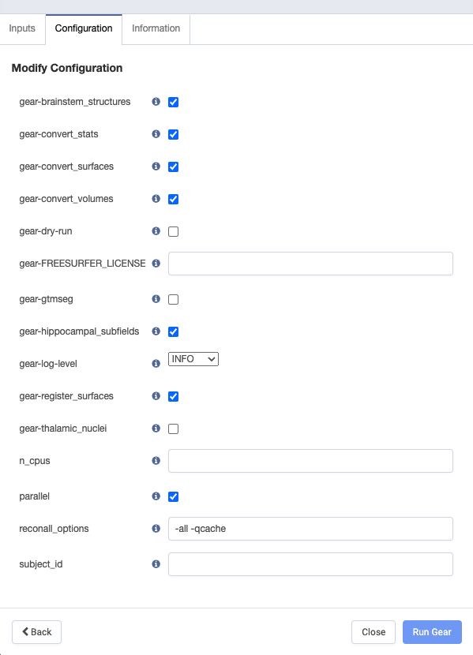
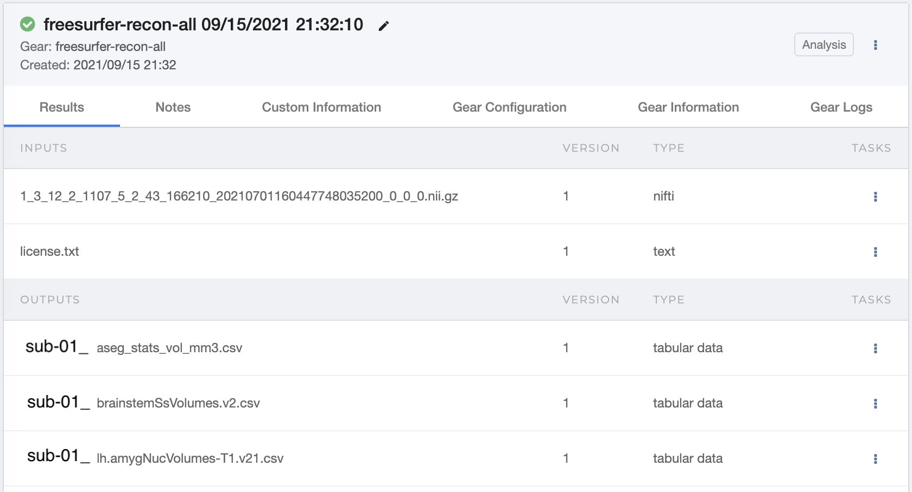

FreeSurfer is a software package that analyzes and visualizes structural and functional neuroimaging data. It is a reputable software known for its structural MRI analysis.
FreeSurfer commands are called from the command line, so having some familiarity is recommended. To download and install FreeSurfer onto your preferred local machine, follow their documentation here.
An important step in the installation process is obtaining a license key. This step is critical because the license key file is required in order to use Freesurfer on Flywheel.
recon-all is the command that implements FreeSurfer's cortical reconstruction process. The reconstruction process is multi-stepped and the details are explained on FreeSurfer's recon-allprocess flow page.
Users are able to have recon-all perform any part of the cortical reconstruction pipeline with additional arguments. But most commonly, users specify recon-all to perform all parts of the cortical reconstruction.Below are common commands one would use to call recon-all.
Command to perform all parts of cortical reconstruction on a T1-weighted image.
A good question to ask is why you should run recon-all on Flywheel when it can be performed locally? Well, recon-all is a notoriously time consuming computational process. It has been documented that processing one subject could take 6 - 24 hours depending on the computer's processor. Whereas, performing recon-all through Flywheel would use the (cloud) processors Flywheel is hosted on. This not only potentially speeds up the whole process, but also frees up the computational load from your local machine.
Also consider re-naming the "Analysis Label" section with additional information beyond the processing start time, such as the T1-weighted image file name.
In the "Configuration" tab, modify the desired recon-all options.

Tip
It is highly recommended to use the "parallel" option. This allows recon-all to process in parallel, which greatly speeds up the computational processing time. The default is to have the parallel selected, but checking the configuration options is good practice.
Select "Run Gear" in the bottom right-hand corner and wait > 6 hours.
Once recon-all is finished, the results will appear in the session's "Analyses" tab. Refer to the Analysis Gear documentation for images and more details about analysis gears on Flywheel.
Here is an example output from recon-all. The image has been truncated and does not show every output file created by the recon-all gear. All output files can be downloaded as apart of the entire analysis or individually by selecting the icon.

There will be a zip file located within the output files (see below). Unzipping the archived file will produce the usual recon-alloutput.
There are a few metrics that FreeSurfer is capable of calculating that may be of interest to people attempting to quantitatively assess the reconstruction results.
The euler number describes the topographical complexity of the reconstructed cortical surface. The formula for the euler number is \(\mathrm{euler} = 2 - 2g\), where \(g\) is the number of holes in the surface. Therefore, the euler number for a flat and smooth surface with no holes (\(g = 0\)) is 2.
A good surface reconstruction algorithm aims to minimize the number of holes, \(g\), in the surface. This means the closer the surface's euler number comes to 2, the better the reconstruction, which implies better data quality (see Rosen et al., 2018)).
The following command can be called from the command line to find the euler number and number of holes for each hemisphere:
Contrast-to-noise ratio (CNR) is the difference in signal intensities between regions classified as different tissues types vs. the background (noise). Therefore, the greater the CNR value, the greater the contrast (and algorithmic separability) between the two tissues types.
FreeSurfer calculates the gray/white matter and gray matter/cerebral spinal fluid (CSF) CNR values for each hemisphere with the mri_cnr command.
Each hemisphere's CNR value is the average of the hemisphere's gray/white and gray/CSF CNR values, and the total CNR value is the average of the two hemisphere's CNR values.